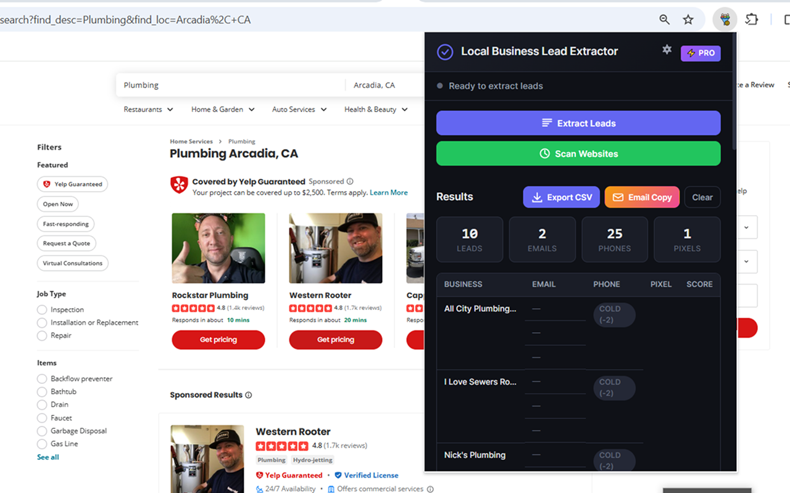
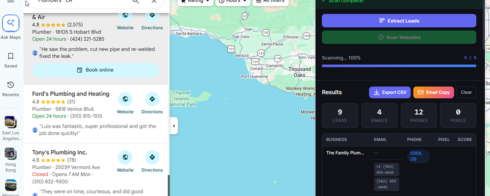

The ultimate tool for capturing targeted local business leads.
Local Business Lead Extractor is the ultimate productivity tool for marketers, sales professionals, and agency owners. With just one click, you can automatically extract highly-targeted B2B contact information directly from public directory websites (like Yelp, Yellow Pages, etc.) without needing any account logins or complex API setups.
Stop wasting hours manually copying and pasting data. Let the extension do the heavy lifting for you!
(Note: The free version includes a generous daily export limit. Upgrade to Pro within the extension to unlock unlimited daily exports and advanced features like the cold email generator.)
As you browse directory pages, the extension discovers hidden contact information directly on the screen. Instead of manually hunting for emails and phone numbers, it prioritizes high-value contact pages and identifies if a business has Facebook Pixel installed—perfect for ad agencies looking for clients who need paid social management. All data is cleaned and sorted automatically.
Extract from Yelp
and Yellow Pages.
Instantly pull business names, ratings, and website URLs from any directory page with a single click. Discover multiple emails and phone numbers reliably.
Get it from Chrome Web Store
Scan Google Maps
for hidden info.
The extension visits the targeted business websites in the background to discover hidden contact information, identifying "About Us" pages and more.
Get it from Edge Add-ons
Core Features
Everything you need to supercharge your sales outreach workflow.
One-Click Lead Extraction
Instantly pull business names and website URLs from any directory page.
Deep Scanning
The extension visits the targeted business websites in the background to discover hidden contact information.
Email & Phone Number Discovery
Automatically finds multiple emails and phone numbers, prioritizing high-value contact and "About Us" pages.
Facebook Pixel Detection
Identifies if a business has Facebook/Meta Pixel installed on their website—perfect for ad agencies looking for clients who run (or need) paid ads!
Smart Deduplication
Never worry about duplicate leads. All data is cleaned and sorted automatically.
Export to CSV
Download your clean list of prospects instantly into a standard CSV format, ready to be uploaded to your CRM, cold email tool, or Excel.
Cold Email Generator (Pro Feature)
Automatically writes customized cold email templates based on whether the local business has a Facebook Pixel installed or not.
No Login / No Setup Required
Works entirely locally in your browser. Install it and start prospecting immediately.
All data extraction occurs locally within your own browser. We do NOT collect, store, or transmit your extracted lead lists or personal browsing data to our servers. Your data stays completely private on your local machine.
Stop losing hours to manual prospecting.
Install the Local Business Lead Extractor today, and start building your lead lists natively and efficiently. Completely local, completely private.